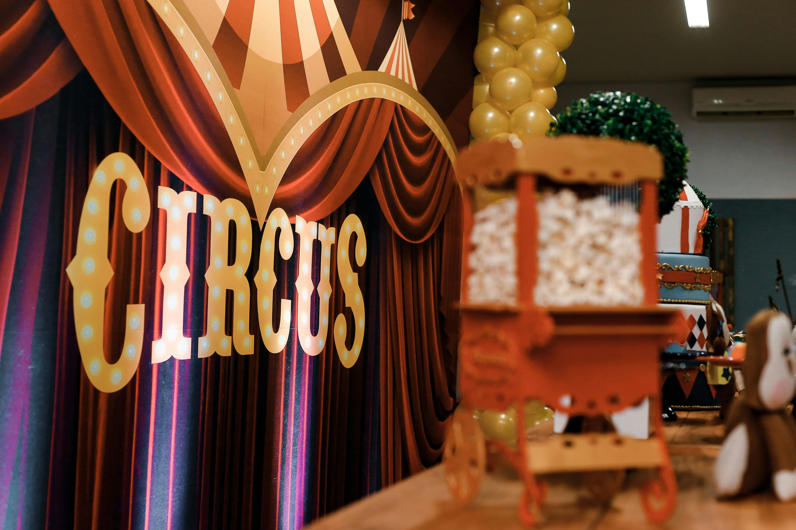

Your One-Stop Shop for Circus Props
Find the best quality props and equipment for all your circus needs.
Welcome to J-Prop Shop
At J-Prop Shop, we specialize in providing top-notch circus props and equipment. Whether you're a professional performer or a hobbyist, you'll find everything you need to dazzle your audience. Our range includes juggling balls, unicycles, and customized props tailored to your needs.
About Us
Learn more about our journey and expertise in circus props. We have been in the business for over 20 years, providing high-quality props for performers all over the world.
Read MoreWhat Our Customers Say
"The best circus props I've ever used! Highly recommend J-Prop Shop!"
- John Doe, Professional Juggler
"Excellent quality and great customer service. Will buy again!"
- Jane Smith, Circus Performer
Conclusion
J-Prop Shop is dedicated to providing high-quality circus props and equipment to performers of all levels. We are committed to innovation, customer satisfaction, and maintaining the highest standards in our products. Join our community of performers and experience the best in circus props.